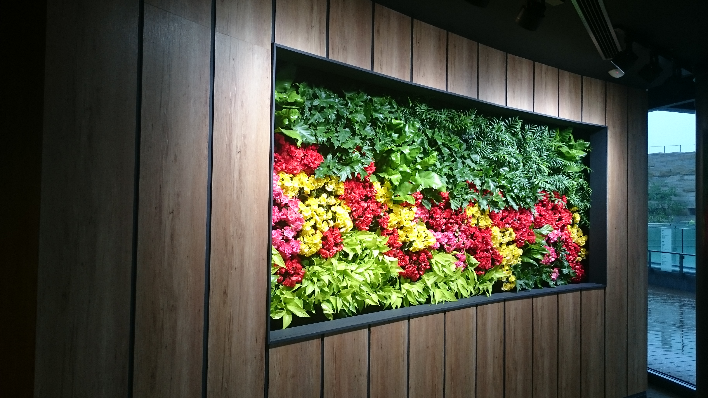

屋内壁面緑化工法
Earth Wall Stage
屋内にみどりを創出する
「アースウォール・ステージ」
都市空間のなかでも屋内垂直面の緑化は無機質な景観に
安らぎと癒しを与えてくれる画期的なコンセプトです。
人と地域が自然に融合することを大切に実績を積み重ねてきた
当社の屋内壁面緑化システム「アースウォール・ステージ」は、
「みどりとともに」を屋内でも実践できるシステムです。
アースウォール・ステージ
製品の特徴
簡単施工で仕上がりが綺麗
簡単な施工方法で手間がなく、初期完成度の高い仕上がりになります。植栽ケースは小単位のユニット式で、連続させることで大規模な壁面緑化も可能です。
室内に適した潅水機能
底面潅水式で上段から給水し、植栽ケースに水が溜まるとオーバーフローした水が下段に流れる仕組みです。ケースに溜まった水は不織布で植物へと供給される効率の良い潅水を実現しています。
さまざまなシーンに対応
壁一面や額縁で囲んで絵画のように見せたり、インテリアと一体にさせるなどユニット式により目的に合った緑化に対応します。屋内のあらゆる場所で緑の環境を創出します。
ひと鉢単位での施工
専用植栽ケースに小型の鉢を組み合わせ施工します。保水力のある専用スポンジで苗を包みケースに置くだけなので植物の交換や模様替えなどメンテナンスも容易です。
EARTH WALL STAGE
-
- アースウォール・ステージは屋内のわずかなスペースにも対応でき、底面潅水式で壁面上段から簡単に水やりができます。
- 市販の植物を使用することができるので、屋内の景観を美しく保てるよう自由な植物選択が出来ます。植物が生き生きと生育出来るステージなのです。
- アースウォール・ステージは屋内のわずかなスペースにも対応でき、底面潅水式で壁面上段から簡単に水やりができます。
- アースウォール・ステージ基本型
-
サイズ W500×H1000×D160（ 0.5 ㎡） 重量 総重量（植栽後）約30 ㎏ セット内容 パネル（1枚）/専用カセット（28個）/専用保水スポンジ（28枚）/給水用不織布（28 個）/ 潅水部材（1 式） 素材 アングル枠：アルミ/ボトルナット：ステンレス製/ジョイントパネル等：ポリプロピレン 備考 パネルには植栽ケースが設置されています。
アースウォール・ステージはやすらぎの室内空間を
みどりとともに演出します。
屋内植物事例STAGE対応
観葉植物を中心とした色鮮やかな植栽が可能です。
ポトス
セローム
タマシダ
ドラセナ
プテリス
アースウォール・ステージ
簡単な施工方法で手間がなく、初期完成度の高い仕上がりになります。植栽ケースは小単位のユニット式で、連続させることで大規模な壁面緑化も可能です。
- 